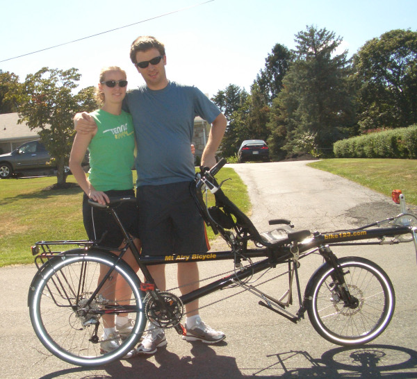

Monday, August 11, 2008
So we took a look at a bike
A few weeks ago I was looking for a tandem recumbent to rent so that Jillian and I could try one to see if this whole idea is actually feasible. When Mt Airy Bikes came up, the first tandem listed on their page was the Hase Pino. One of concerns with the tandem recumbent was big hills. A couple I spoke to at a ride in Harrisburg said they commonly went 3mph the whole way up the hill. I hoped that with a hybrid, whomever was in the back would be able to stand up and put in some power when we needed it. There were other advantages as well. I thought it would be much easier to talk to each other, and the two different kinds of seats could provide a lot of relief to sore behinds on a long ride.
Since Jillian was in town Saturday, we went out to Mt Airy and gave the Pino a test ride. For starters, I was very impressed with Mt Airy Bikes. The staff we talked to was friendly, knowledgeable, and had a real passion for riding. There was a parking lot full of bikes, as well as a building the size of a three car garage with bikes hanging and sitting in every conceivable spot. I'm not actually sure how all the bikes outside went in at night. I strongly recommend it for anyone who wants any bike at all, used or new. They even have these things for rent.

Getting on the Pino was an adventure. The captain sits in the back, with full control over steering, gears, and brakes. The person in the front is just along for the ride. I started in the back, and we had a very rough first start. We swerved all over the place, and it was probably only through sheer luck that we didn't hit any cars on our way out. After a quarter mile or so I got the hang of steering, Jillian was able to adjust to riding while sitting down, and things got a lot better.
Once we started shifting, Jillian pointed out that I had to stop shifting without warning her. I hadn't even thought about that. It would be really weird to all of a sudden need to pedal a lot harder because the gear changed when you weren't ready. Starting, stopping, turning - everything required complete, clear, concise communication. Something that will certainly be very important in our relationship
Around the half way point, Jillian and I tried switching places on a long almost flat stretch of road. This was an adventure. The first two or three starts she tried to start it like a regular bike. Normally, you lean the bike a little bit so you can almost straddle the seat, push off, and go. With this bike, when you lean, the added weight makes the whole bike fall right over. Ultimately, Jillian wasn't able to start the bike as the captain. It wasn't until later that we realized we were in way too high of a gear.
Once we had that figured out, we tried again at the top of a little hill. This time things went much smoother. For me, this part of the ride highlighted one of my major goals of this trip. While I'm sitting in the front, I have no control at all. I can't turn the bike. I can't stop it. I can't shift down right before a hill. Since I'm sitting, I didn't even feel like I could lean my weight at all and prevent the bike from tipping over. I had to have total and complete faith and trust that Jillian would take care of it. I just had to let go. It was very different for me, and will definitely make me grow.
On the way back to the shop, I tried standing up to pedal. That was a disaster. The handlebars swayed back and forth and the bike got very unsteady. If I'm going to stand, I need to remember not to sway the bike back and forth like I normally do when climbing.
When we got back to the bike shop, I finally felt comfortable riding the bike. Not ready to take it screaming down a big hill, but ready to ride it twenty or thirty miles in a stretch, so long as there were no big hills. It had a lot in common with driving stick for the first few weeks. You just try to avoid ever needing to start on a hill. We'll definitely need a lot of practice riding it, so we're going to need to get it in time to do a bunch of charity rides before summer.
Unfortunately, this isn't an inexpensive bike. A new one costs around 3100 euros, plus costs for the kick stand and fenders. The guy at the shop thought he could get us one for around $4600. We did see a lot of other advantages that might justify the price. Having the rear rider in a traditional position provides much better visibility. The recumbent seat means that if one of us is injured, they can slack off for the day and rest. There is definitively easier communication. Perhaps most importantly, the two different seats makes it easier on your rear end.
In two weeks there's a ride outside of Charlottesville that we're considering doing. The course is intense. You climb nearly 3500 feet over the last six miles, without any breaks. Tomorrow I'm going to get in touch with the bike shop and see if they're willing to rent the Pino to us so we can really see if this will work. They do normally rent bikes, and are even willing to apply between 50 and 100% of the rental price toward the purchase price, but I feel like the Hase is different from other rides.
We are definitely going to need some help in order to get this bike, but I think both Jillian and I agree it would be totally worth it, and probably help us grow as a couple for years to come.
| Home | An interesting experience at Safeway →


 | posted at: 20:20 |
permanent link and comments
| posted at: 20:20 |
permanent link and comments